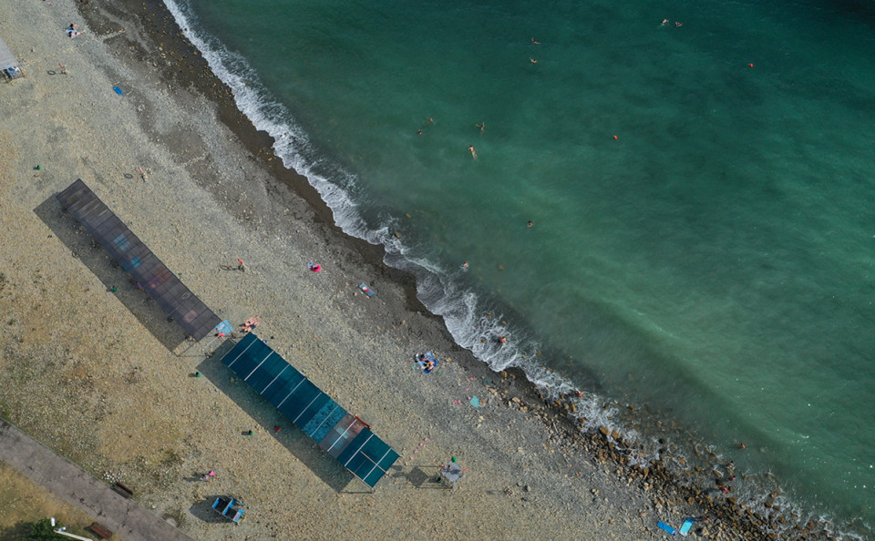
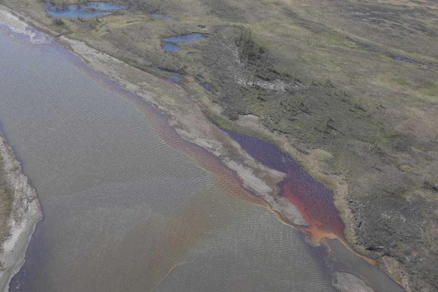
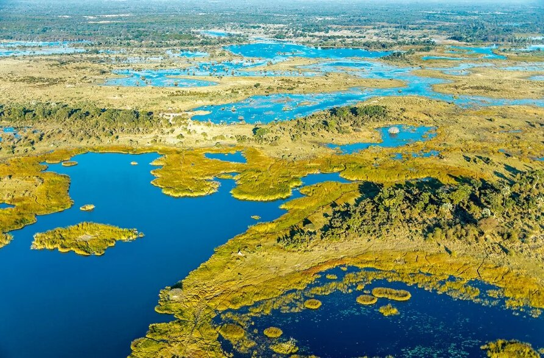
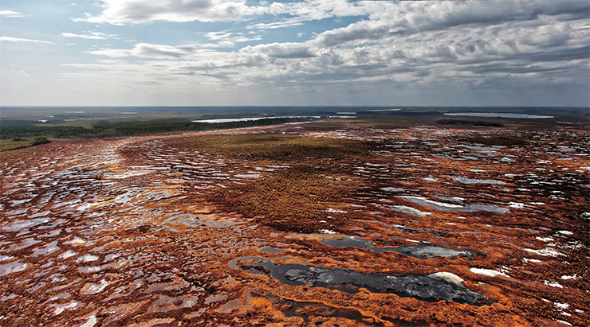
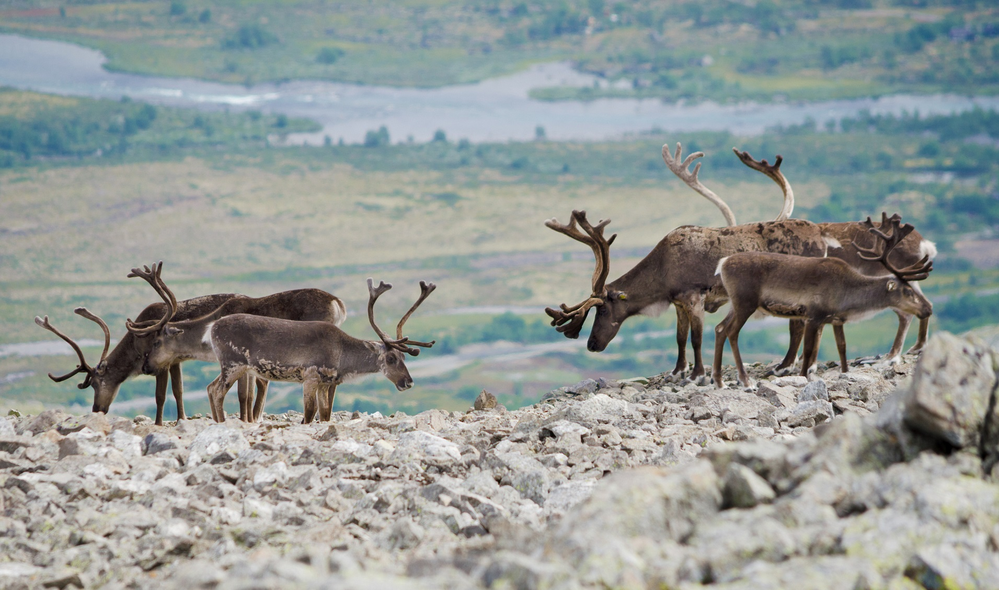
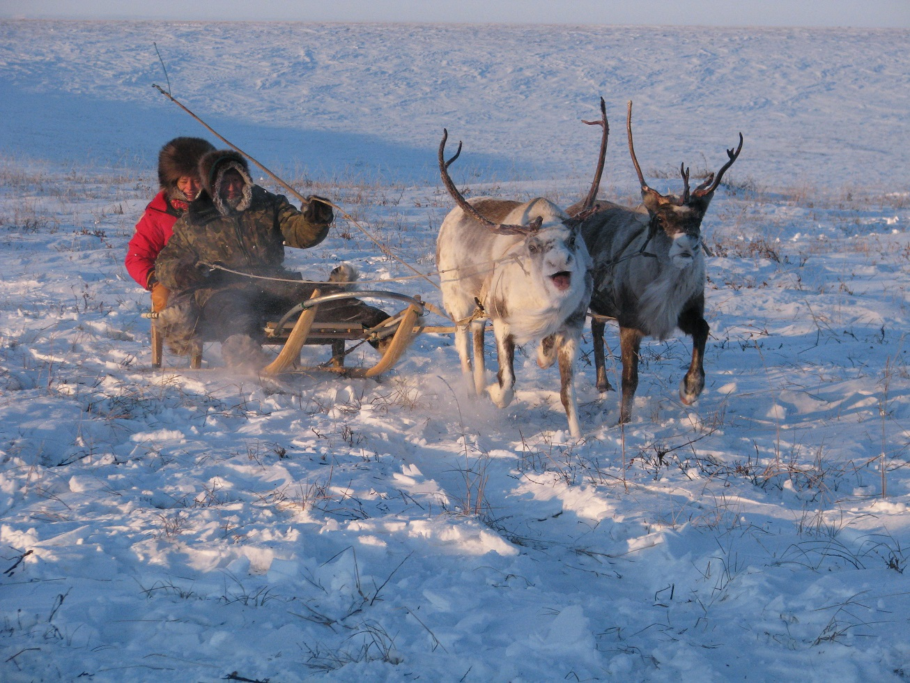
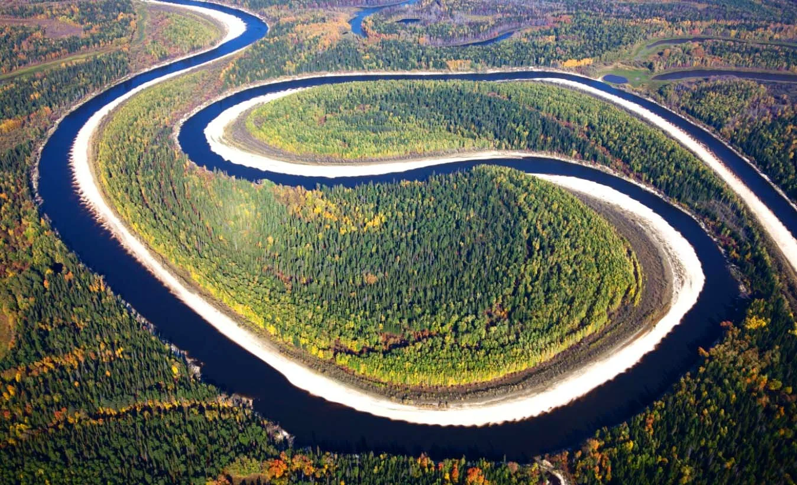
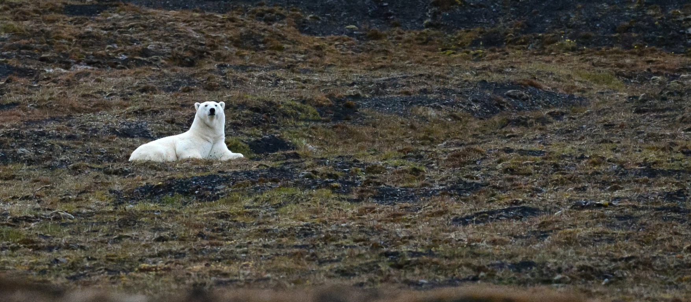
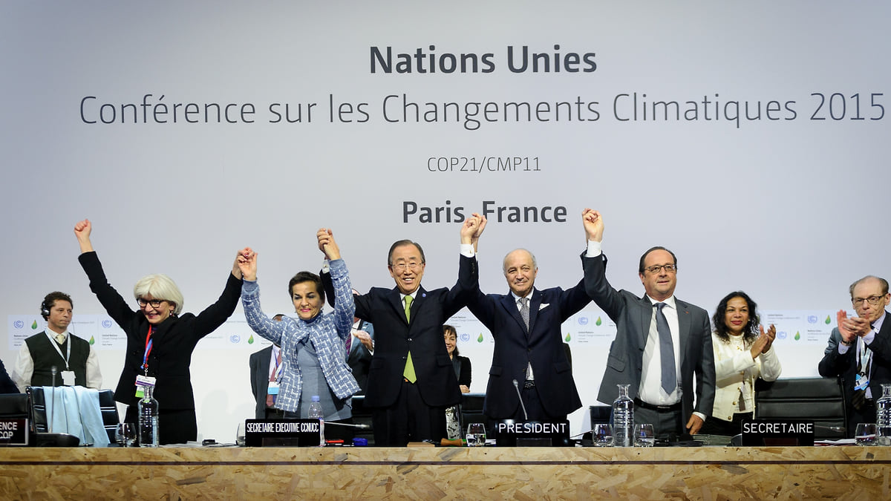

Болота, реки, животный мир и тайга — экологические последствия нефтяного освоения в постсоветский период
Цель экскурсии: изучить экологические последствия добычи полезных ископаемых и ресурсов в Западной Сибири в постсоветский период, рассмотреть масштабы загрязнения, государственную экологическую политику и попытки устойчивого развития региона.

(https://s0.rbk.ru/v6_top_pics/resized/960xH/media/img/2/38/756287561066382.jpg) Фото: Юрий Березнюк / ТАССПо экспертным оценкам, площадь земель, загрязнённых нефтью и нефтепродуктами в Ханты-Мансийском автономном округе (ХМАО), составляет более 3 тысяч гектаров — это сопоставимо с размером 420 футбольных полей. Основные причины: критическая ветхость трубопроводной инфраструктуры, недостаточный государственный контроль и экономические стимулы, позволяющие компаниям скрывать масштабы аварий.
Сибирские реки — Обь, Иртыш, Вах — несут следы нефтяного загрязнения на сотни километров. Только в 2023 году в водоёмах Обь-Иртышского бассейна было зафиксировано 226 случаев высокого и экстремально высокого загрязнения воды, включая превышение норм содержания марганца, железа, азота, нефтепродуктов и ртути. Это означает, что более половины дней в году в одной из крупнейших речных систем мира фиксируются опасные уровни загрязнения.

( https://gnkk.ru/nkk/data/uploads/2020/12/o-45898-1.jpg )
(https://novate.ru/files/u34476/otlichniebolota0.jpg)Западносибирская низменность содержит крупнейшие в мире болотные экосистемы. Васюганские болота хранят около 18,8 гигатонн углерода в торфяном слое. Нарушение целостности болот из-за нефтяной инфраструктуры ведёт к высвобождению метана и ускорению изменения климата.
Особую тревогу учeных вызывает рост эмиссии парниковых газов. Исследования Института мониторинга климатических и экологических систем СО РАН показывают, что за последние 30 лет поток метана болот Западной Сибири увеличился в среднем на 15–20%. Общие значения потока метана, поступившего в атмосферу с исследуемой территории за 30 лет, составили в среднем более 216 мегатонн — или чуть более 7 мегатонн за год. Для сравнения: 1 мегатонна равняется примерно 180 тысячам африканских слонов.

(https://scfh.ru/files/medialibrary/560/56081577626ed6e19f68e011d34a464e.jpg)
(https://gnkk.ru/nkk/data/uploads/2023/03/lori-0010983813-a5.jpg)Водные экосистемы. В результате попадания нефтепродуктов в водоёмы происходит не только прямая гибель рыб и кормовых организмов, но и выводятся из строя нерестилища и зимовальные ямы. Для компенсации ущерба нефтяные компании реализуют программы искусственного зарыбления: например, компания «РуссНефть» ежегодно выпускает в Обь-Иртышский бассейн миллионы мальков — только за один год в воды Оби было выпущено 3,57 млн мальков муксуна и 408 тыс. мальков нельмы. Однако искусственное воспроизводство не может полностью заменить утраченные естественные популяции.
Птицы. Нефтегазовая инфраструктура — трубопроводы, дороги, факелы для сжигания попутного газа — фрагментирует места обитания птиц и создаёт постоянный фактор беспокойства. Особенно страдают водоплавающие и околоводные виды, гнездящиеся в поймах рек и на болотах. Трагическим примером стал разлив дизельного топлива на Таймыре в 2020 году: зона прямого воздействия на объекты животного мира составила около 15 кв. км, были уничтожены кладки и гнёзда.
Северный олень и коренные народы. Сокращение популяции северного оленя связано с уничтожением ягельных боров, фактором беспокойства от техники и вертолётов, ростом браконьерства, а также пересечением основных миграционных путей дорогами и трубопроводами. Коренные народы Севера, чей традиционный уклад жизни неразрывно связан с оленеводством, оказываются в критическом положении. Оленеводы вынуждены многократно менять места выпаса, сталкиваясь с расширением нефтепромыслов. Конфликты между нефтяными компаниями и коренными жителями за территорию родовых угодий становятся всё более острыми.

(https://reindeerherding.org/images/news/2020/ICR.jpg)Климатический регулятор планетарного масштаба. Сохранение болотных экосистем в ненарушенном состоянии критически важно для выполнения Россией климатических обязательств в рамках Парижского соглашения. Западная Сибирь — один из самых водообильных регионов страны, где сосредоточены крупнейшие реки, обширные болота, значительные запасы подземных вод и уникальные озёрные системы.
Водные ресурсы стратегического значения. Обь-Иртышский бассейн обеспечивает водой миллионы людей в нескольких субъектах Российской Федерации и является основой для рыбного промысла и сельского хозяйства. Загрязнение водных бассейнов — проблема критическая, требующая немедленных действий.

(https://ldpr.ru/upload/iblock/9ef/gcqrkd08cagljplkuxhtmc8uow94oj19/c07c015a2bfb35c92815569466bfc0dd4c85d6bf0a5c89d6f309fe7b0e6dd564.png)Биоразнообразие и природное наследие. Западная Сибирь — дом для уникальных видов флоры и фауны, многие из которых занесены в Красную книгу России, в том числе снежный барс и алтайский горный баран. Деградация экосистем региона несёт прямые экономические риски: загрязнение рек требует колоссальных затрат на очистку питьевой воды, утрата рыбных запасов подрывает продовольственную безопасность, а разрушение пастбищ угрожает существованию коренных малочисленных народов Севера.

(http://nature.kremlin.ru/media/photo/img1880x960/NbRRnwvMfU9W9XceVDps1NmlUY6lCEKx.jpg)Тем не менее в 2010-е годы наметились определённые положительные тенденции. Крупные компании начали публиковать экологические отчёты, запущены программы рекультивации загрязнённых территорий. В Ханты-Мансийском автономном округе площадь нефтезагрязнённых земель за 2020 год сократилась почти на 40% — с 3 310 до 2 367 гектаров. В 2020 году нефтяные компании инвестировали в природоохранные мероприятия в регионе около 81,6 млрд рублей.
Однако независимые эксперты указывают на сохраняющийся значительный разрыв между декларациями и реальными результатами. Проблема ликвидации накопленного экологического ущерба советской эпохи по-прежнему остаётся нерешённой, а темпы рекультивации всё ещё недостаточны. По оценкам властей ХМАО, на текущий уровень рекультивации земель регион сможет выйти лишь к 2027 году.
В 2019 году Россия присоединилась к Парижскому соглашению по климату. Отдельные нефтяные компании, работающие в Западной Сибири, заявили о планах по снижению углеродного следа. Однако судьба западносибирской природы сегодня зависит от того, сможет ли общество превратить формальные экологические стандарты в реальную практику. Без этого уникальная природа Западной Сибири рискует остаться лишь страницей в учебниках истории.

(https://iv.kommersant.ru/Issues.photo/CORP/2023/11/10/KMO_157030_06324_1_t245_163856.webp)Что вы запомнили из экскурсии «Природа Западной Сибири под давлением»?
1. Сколько гектаров земли в ХМАО загрязнено нефтью и нефтепродуктами (по экспертным оценкам)?
2. Какое уникальное болото названо «одним из величайших болот мира» и хранит около 18,8 гигатонн углерода?
3. Какое животное особенно пострадало от уничтожения ягельных боров и фактора беспокойства со стороны нефтяной инфраструктуры?